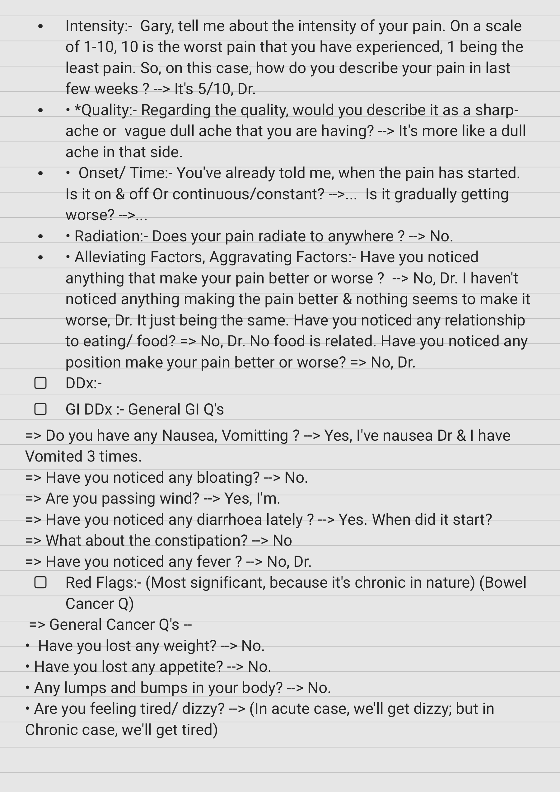

Source: Dr. Amir workshop — GIT 2026 / 2.Abdominal pain case (Aug 2026 drop) · Specialty: gastroenterology
Your next patient is a 27-year-old lady who presents to your general practice complaining of right lower abdominal pain for 4 days. The pain has been getting worse in the last 24 hours. (Some recalls add to the stem/findings: the patient is feverish and has vomited.)
Pain exploration:
Red flags (cancer questions): weight loss → No; appetite loss → No; lumps and bumps → No; tired/dizzy screen (acute → dizzy; chronic → tired).
Specific questions: fresh blood in stool → No; dark stool → No; recent change in bowel motion → No; family history of cancers → No; previous abdominal surgery → No; regular medications → No.
KUB group: dysuria → No; frequency → No; blood in urine → "Not really."
Pelvic group:
Key history findings: diarrhoea; missed period (LMP 5 weeks ago); irregular periods every 4–6 weeks; history of chlamydia at 18.
Probe each positive finding:
"Multiple findings drama" case: there are positives pointing to PID, ectopic pregnancy and appendicitis simultaneously. The candidate who rules out multiple differentials will uncover multiple findings — finding several positives means you are doing a good job, not a bad one.
PE findings card: Temp 37.5; RLQ tenderness and rebound tenderness; guarding and rigidity; CMT (+); normal-size uterus; right adnexal tenderness; urine pregnancy test (+).
Diagnosis: "Most likely you have a condition called ectopic pregnancy."
Explanation: "In this condition the pregnancy forms in the tube instead of the womb — an unusual position for the pregnancy sac."
Reasons:
(Regarding the recalled reasoning that "even feeling feverish is a feature of ectopic pregnancy" — see expert corrections: fever is not a typical feature of ectopic pregnancy and should push you to reconsider PID/appendicitis, not be used to support ectopic.)
Your next patient is a 23-year-old lady presenting to general practice with abdominal pain.
Findings: pain in the RLQ, no shift; LMP 2 weeks ago (i.e. mid-cycle); pain since this morning; mild intensity (4–5/10); dull; no radiation; previous similar self-resolving episodes (2).
Diagnosis: Mittelschmerz — also known as ovulation pain or mid-cycle pain.
Explanation: "In the middle of your menstrual cycle, usually around day 14 (assuming a regular 28-day cycle), the egg is released from the ovary. This releases some fluid into the tummy, which causes pain."
Reasons:
There is no PE in this variant, so this is a provisional diagnosis — the most likely cause.
DDx for RLQ pain in this variant: GI — appendicitis, bowel obstruction; KUB — UTI, ureteric colic; hernia; pelvic; obstetric — ectopic pregnancy; gynaecological — PID, ovarian torsion; shingles.

Reviewed by: history-taking-expert (Australian clinical supervisor) · fact-checked against the irStudy medical textbook RAG index.